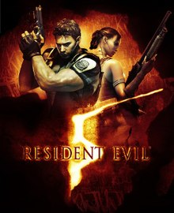

Resident Evil 5
March 5, 2009
Survival Horror
9.3
Capcom
PlayStation 4, PlayStation 3, Nintendo Switch, Xbox One, Xbox 360,
Android, Microsoft Windows
Raid on the Spencer Estate: In 2006, the Bioterrorism Security
Assessment Alliance receives intel on the whereabouts of Umbrella's
founder, Oswell E. Spencer. Jill Valentine and Chris Redfield are
ordered by the BSAA's European Headquarters to apprehend him. They
accept the mission in the hope of uncovering some information that might
lead them to Albert Wesker.
Chris Redfield
Albert Wesker